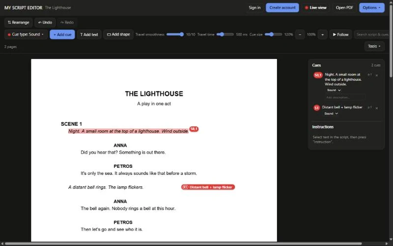

My Script Editor
Mark up a theater script with numbered cues and share them live with the crew.

My Script Editor turns the script of a show into a cue sheet. You open the PDF of the script, select a line and add a numbered cue for sound, lights, QLab or an instruction for the technicians.
- Cues by type (QLab, sound, lights, instructions), with text and shapes on the page
- Renumber all cues in one go, undo and redo
- Export the script as a PDF with or without cues, filtered by type, or as a cue report
- Live view: share the cue sheet with the crew during the show
- Accounts and saved projects, dark or light look, English and Greek